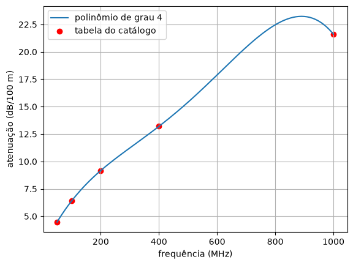

10. Interpolação polinomial¶
Muita informação chega em forma de tabela: a atenuação de um cabo em algumas frequências no catálogo do fabricante, a altura média das crianças em algumas idades na curva da OMS, a posição de um personagem em alguns quadros de uma animação. A pergunta é quase sempre sobre um valor que não está na tabela: a atenuação em 300 MHz, a altura aos 18 meses, a posição no quadro 15.
Interpolar é estimar um valor entre os pontos de uma tabela, com uma função que passa exatamente por eles. A função mais simples que dá para calcular com somas e multiplicações é o polinômio, e este capítulo mostra três jeitos de construí-lo. Os três dão o mesmo polinômio, por caminhos diferentes.
Estimar entre os pontos¶
🌍 Contexto: o catálogo de um cabo coaxial
Todo cabo perde sinal ao longo do comprimento, e a perda cresce com a frequência: um cabo de antena perde muito mais em 1 GHz do que em 50 MHz. Os fabricantes publicam a atenuação (em dB a cada 100 m) numa tabela com algumas frequências. Para projetar um enlace numa frequência que não está na tabela, é preciso interpolar.
O jeito mais simples é traçar uma reta entre os dois pontos vizinhos:
# Tabela de catalogo: atenuacao de um cabo coaxial (dB por 100 m) em algumas
# frequencias. E em 300 MHz, que nao esta na tabela?
freq = [50, 100, 200, 400, 1000] # MHz
aten = [4.48, 6.40, 9.17, 13.20, 21.61] # dB / 100 m
f = 300
# a frequencia 300 esta entre 200 (posicao 2) e 400 (posicao 3):
# a reta que liga os dois pontos da tabela
inclinacao = (aten[3] - aten[2]) / (freq[3] - freq[2])
estimativa = aten[2] + inclinacao * (f - freq[2])
print(f"interpolacao linear em {f} MHz: {estimativa:.3f} dB/100 m")
A interpolação linear é o que se faz de cabeça, e muitas vezes basta. Mas ela usa só dois pontos e ignora que a curva é curva: entre 200 e 400 MHz, a atenuação não cresce em linha reta.
Um polinômio por todos os pontos¶
Por dois pontos passa uma única reta; por três, uma única parábola; por \(n\) pontos passa um único polinômio de grau \(n - 1\). Com os 5 pontos do catálogo, o polinômio tem grau 4:
Cada ponto da tabela dá uma equação (\(p(x_i) = y_i\)) nos cinco coeficientes. São 5 equações lineares e 5 incógnitas: um sistema do capítulo 8. A matriz dele, com \(x_i^j\) na linha \(i\) e coluna \(j\), se chama matriz de Vandermonde.
# Um polinomio que passa por TODOS os pontos da tabela. Com 5 pontos, um
# polinomio de grau 4: p(x) = a0 + a1 x + a2 x**2 + a3 x**3 + a4 x**4.
# Cada ponto da uma equacao nos coeficientes: um sistema linear (cap. 8).
import numpy as np
freq = np.array([50.0, 100.0, 200.0, 400.0, 1000.0])
aten = np.array([4.48, 6.40, 9.17, 13.20, 21.61])
n = len(freq)
V = np.zeros((n, n))
for i in range(n):
for j in range(n):
V[i, j] = freq[i] ** j # a matriz de Vandermonde
coef = np.linalg.solve(V, aten)
print("coeficientes:", coef)
def p(x):
soma = 0.0
for j in range(n):
soma = soma + coef[j] * x**j
return soma
print(f"p(300) = {p(300):.3f} dB/100 m")
print(f"confere nos pontos da tabela: {np.round(p(freq), 6)}")
coeficientes: [ 2.02407686e+00 5.54923559e-02 -1.38216374e-04 2.20689223e-07
-1.18379282e-10]
p(300) = 11.232 dB/100 m
confere nos pontos da tabela: [ 4.48 6.4 9.17 13.2 21.61]
O polinômio passa exatamente pelos cinco pontos da tabela e dá 11,232 dB em 300 MHz, um pouco acima da reta (11,185). Repare nos coeficientes: vão de \(2\) a \(10^{-10}\). Com mais pontos, a matriz de Vandermonde fica mal condicionada (capítulo 8), e os coeficientes perdem precisão. É um dos motivos para os dois métodos seguintes.
No quadro: o polinômio de Lagrange¶
🧑🏫 No quadro — a base de Lagrange
1. Em vez de achar coeficientes, monte o polinômio com peças prontas. Para cada ponto \(i\) da tabela, crie um polinômio \(L_i(x)\) que vale 1 em \(x_i\) e 0 em todos os outros pontos da tabela:
Cada fator do produto zera em \(x_j\) (o numerador) e vale 1 em \(x_i\) (numerador e denominador iguais).
2. Some as peças, cada uma multiplicada pelo seu \(y_i\):
Em \(x = x_k\), todas as peças valem 0, menos a \(L_k\), que vale 1: \(p(x_k) = y_k\).
3. Em código, são dois laços: um produto dentro de uma soma. Nenhum sistema para resolver.
# Lagrange: o mesmo polinomio, sem sistema nenhum.
# p(x) = soma de y_i * L_i(x), L_i(x) = produto de (x - x_j) / (x_i - x_j), j != i
import numpy as np
import matplotlib.pyplot as plt
freq = [50.0, 100.0, 200.0, 400.0, 1000.0]
aten = [4.48, 6.40, 9.17, 13.20, 21.61]
def lagrange(xs, ys, x):
n = len(xs)
soma = 0.0
for i in range(n):
L = 1.0
for j in range(n):
if j != i:
L = L * (x - xs[j]) / (xs[i] - xs[j])
soma = soma + ys[i] * L
return soma
print(f"Lagrange em 300 MHz: {lagrange(freq, aten, 300):.3f} dB/100 m")
fs = np.linspace(50, 1000, 200)
plt.figure()
plt.plot(fs, lagrange(freq, aten, fs), label="polinômio de grau 4")
plt.scatter(freq, aten, color="red", label="tabela do catálogo")
plt.xlabel("frequência (MHz)")
plt.ylabel("atenuação (dB/100 m)")
plt.grid()
plt.legend()
plt.show()

Exatamente o mesmo valor do método de Vandermonde, como tinha de ser: por 5 pontos passa um único polinômio de grau 4.
No quadro: as diferenças divididas de Newton¶
🧑🏫 No quadro — o polinômio de Newton
1. Escreva o polinômio numa forma que cresce um termo por vez:
2. Em \(x = x_0\), só sobra \(c_0\): então \(c_0 = y_0\). Em \(x = x_1\), sobram dois termos, e \(c_1 = \dfrac{y_1 - y_0}{x_1 - x_0}\), a inclinação entre os dois primeiros pontos.
3. Os coeficientes seguintes são diferenças divididas de diferenças divididas: \(f[x_i, x_{i+1}] = \dfrac{y_{i+1} - y_i}{x_{i+1} - x_i}\), \(f[x_i, x_{i+1}, x_{i+2}] = \dfrac{f[x_{i+1}, x_{i+2}] - f[x_i, x_{i+1}]}{x_{i+2} - x_i}\), e assim por diante. Numa tabela à mão, cada coluna sai da anterior.
4. A vantagem: um ponto novo na tabela acrescenta um termo, sem refazer os anteriores.
🌍 Contexto: a curva de crescimento
Nas consultas de pediatria, a altura da criança é comparada com a curva da Organização Mundial da Saúde, que dá a altura típica em cada idade. A tabela publicada tem algumas idades; o médico quer saber se uma criança de 18 meses está no esperado.
# Diferencas divididas de Newton: altura media de meninas (curva de
# crescimento da OMS, valores aproximados). Quanto mede, em media, uma menina
# de 18 meses?
idade = [0, 6, 12, 24, 36] # meses
altura = [49.1, 65.7, 74.0, 86.4, 95.1] # cm
n = len(idade)
# a tabela de diferencas divididas, calculada numa lista so: a cada "ordem",
# de baixo para cima, cada valor vira a diferenca dividida com o de cima
coef = altura.copy()
for ordem in range(1, n):
for i in range(n - 1, ordem - 1, -1):
coef[i] = (coef[i] - coef[i - 1]) / (idade[i] - idade[i - ordem])
print("coeficientes de Newton:", coef)
# p(x) = c0 + c1 (x - x0) + c2 (x - x0)(x - x1) + ...
x = 18
p = coef[0]
produto = 1.0
for k in range(1, n):
produto = produto * (x - idade[k - 1])
p = p + coef[k] * produto
print(f"altura estimada aos {x} meses: {p:.2f} cm")
coeficientes de Newton: [49.1, 2.766666666666667, -0.11527777777777785, 0.003993055555555561, -0.00010480967078189328]
altura estimada aos 18 meses: 79.99 cm
Os coeficientes são calculados numa lista só: a cada ordem, de baixo para cima, cada valor é trocado pela diferença dividida com o de cima. A estimativa, 80,0 cm, fica perto da mediana publicada pela OMS para 18 meses (cerca de 80,7 cm).
Interpolar não é extrapolar¶
A tabela do cabo vai até 1000 MHz. E se alguém usar o polinômio em 2 GHz?
# Quebre o metodo: o polinomio do cabo, usado FORA da tabela.
import numpy as np
def lagrange(xs, ys, x):
n = len(xs)
soma = 0.0
for i in range(n):
L = 1.0
for j in range(n):
if j != i:
L = L * (x - xs[j]) / (xs[i] - xs[j])
soma = soma + ys[i] * L
return soma
def modelo_fisico(f):
# o comportamento verdadeiro desse cabo (efeito pelicular + dieletrico)
return 0.62 * np.sqrt(f) + 0.002 * f
freq = [50.0, 100.0, 200.0, 400.0, 1000.0]
aten = [4.48, 6.40, 9.17, 13.20, 21.61]
for f in [300, 1500, 2000, 3000]:
print(f"{f:5d} MHz: polinomio = {lagrange(freq, aten, f):8.2f} modelo = {modelo_fisico(f):6.2f} dB/100 m")
300 MHz: polinomio = 11.23 modelo = 11.34 dB/100 m
1500 MHz: polinomio = -80.19 modelo = 27.01 dB/100 m
2000 MHz: polinomio = -568.41 modelo = 31.73 dB/100 m
3000 MHz: polinomio = -4705.56 modelo = 39.96 dB/100 m
💥 Quebre o método
Dentro da tabela (300 MHz), o polinômio acerta o comportamento físico do cabo com 0,1 dB de diferença. Fora dela, ele diz que o cabo tem atenuação negativa, ou seja, que ele amplifica o sinal. O polinômio não sabe nada da física do cabo: ele só foi obrigado a passar por cinco pontos, e fora deles faz o que os termos de grau alto mandam. Usar a interpolação fora do intervalo da tabela é extrapolar, e o resultado pode ser qualquer coisa.
Mesmo método, outra área¶
🌍 Contexto: quadros-chave numa animação
Nos jogos e filmes de animação, o artista não desenha todos os quadros: ele define a posição do personagem só em alguns quadros-chave (keyframes), e o programa calcula os quadros do meio por interpolação.
# Mesmo metodo, outra area: animacao por quadros-chave (keyframes). O artista
# define a altura de um personagem so em alguns quadros; o programa preenche os
# quadros do meio.
def lagrange(xs, ys, x):
n = len(xs)
soma = 0.0
for i in range(n):
L = 1.0
for j in range(n):
if j != i:
L = L * (x - xs[j]) / (xs[i] - xs[j])
soma = soma + ys[i] * L
return soma
quadros = [0, 10, 20, 30]
altura = [0.0, 1.8, 2.4, 0.0] # um pulo: sobe e desce (metros)
for q in range(0, 31, 5):
print(f"quadro {q:2d}: altura {lagrange(quadros, altura, q):5.2f} m")
quadro 0: altura 0.00 m
quadro 5: altura 0.94 m
quadro 10: altura 1.80 m
quadro 15: altura 2.36 m
quadro 20: altura 2.40 m
quadro 25: altura 1.69 m
quadro 30: altura 0.00 m
A mesma função lagrange que estimou a atenuação de um cabo agora preenche os
quadros de um pulo. Repare no quadro 15: o personagem passa de 2,36 m, entre os
quadros-chave de 1,8 m e 2,4 m. O polinômio "adivinha" a curva do pulo.
Erros comuns deste capítulo¶
| Sintoma | Causa provável |
|---|---|
| o polinômio não passa pelos pontos da tabela | no Lagrange, faltou o if j != i, ou o produto começou em 0 em vez de 1 |
ZeroDivisionError |
dois pontos com o mesmo \(x\) na tabela: não existe função que passe pelos dois |
| valores absurdos (negativos, enormes) | extrapolação: o \(x\) pedido está fora do intervalo da tabela |
| coeficientes de Vandermonde estranhos com muitos pontos | a matriz ficou mal condicionada: use Lagrange ou Newton |
| Newton dá o valor errado depois de acrescentar um ponto | os pontos precisam estar na mesma ordem na tabela de diferenças e no cálculo do polinômio |
Onde isso é usado de verdade¶
- Datasheets e sensores: microcontroladores guardam tabelas de calibração (termistores, sensores de gás, curvas de bateria) e interpolam entre os pontos.
- Computação gráfica e jogos: animação por quadros-chave, curvas de fontes tipográficas e trajetórias de câmera.
- Áudio digital: mudar a taxa de amostragem de um som (de 44,1 kHz para 48 kHz) exige calcular amostras que não existiam, por interpolação.
- Tabelas científicas: antes das calculadoras, logaritmos e senos vinham em tabelas impressas, e interpolar entre as linhas era o dia a dia dos engenheiros.
- Métodos numéricos: as fórmulas de integração do capítulo 12 (trapézio, Simpson) nascem de integrar um polinômio interpolador.
Resumo¶
- Interpolar é estimar entre os pontos de uma tabela com uma função que passa exatamente por eles.
- Por \(n\) pontos passa um único polinômio de grau \(n - 1\). Vandermonde, Lagrange e Newton chegam a ele por caminhos diferentes.
- Vandermonde resolve um sistema linear, que fica mal condicionado com muitos pontos.
- Lagrange soma peças \(L_i(x)\) que valem 1 no seu ponto e 0 nos outros.
- Newton usa diferenças divididas e cresce um termo por ponto novo.
- Não extrapole: fora da tabela, o polinômio pode dar qualquer coisa.
Para praticar¶
A Lista 10 tem Lagrange e diferenças divididas à mão (✏️), a interpolação linear em qualquer tabela, a curva de gama de um monitor e a interpolação inversa (qual \(x\) dá um certo \(y\)).